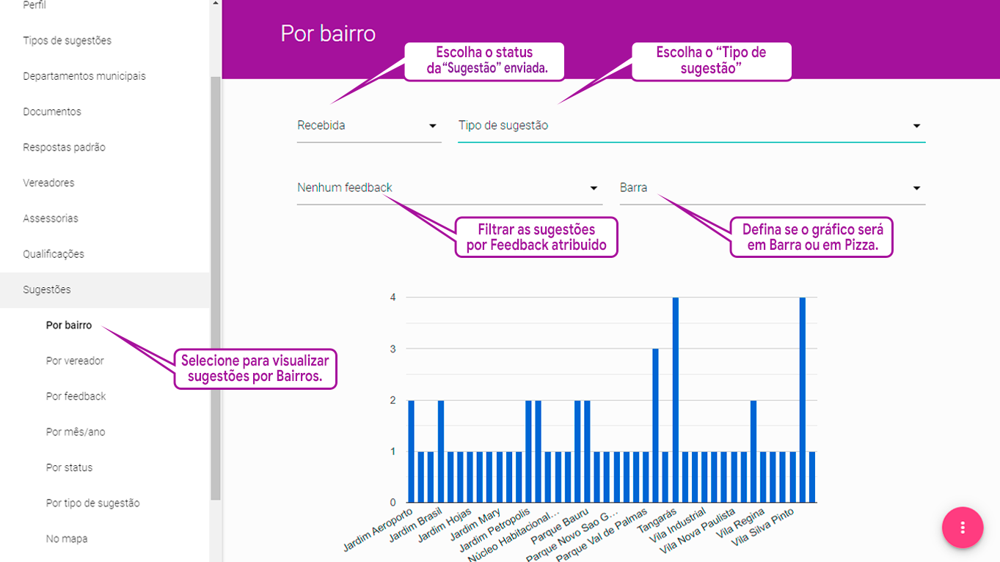
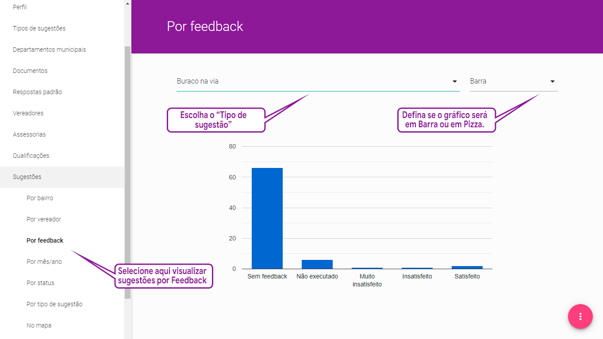
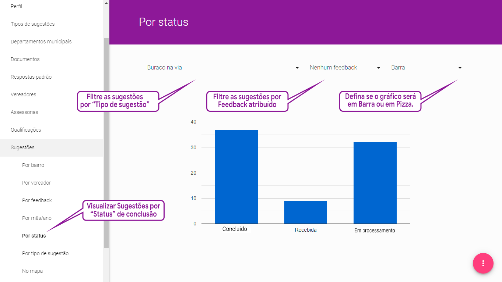
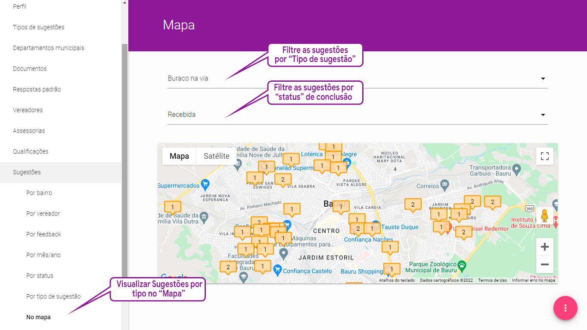

Gerenciando as demandas pelo módulo de Inteligência de Negócios
No menu sugestões, cada parlamentar consegue extrair diversos gráficos para poder obter informações que o ajudarão a monitorar as solicitações por parte do cidadão, bem como ter uma visão geral do status das mesmas e da qualidade percebida do atendimento das diversas unidades gestoras da prefeitura pelos cidadãos.
Sugestões classificadas "por Bairro"
Sugestões classificadas "por Feedback"
Sugestões classificadas "por Período"
Sugestões classificadas "por Satus"
Sugestões classificadas "por Tipo"
Sugestões visualizadas "no Mapa"
Por Bairro
Nesta área os parlamentares conseguem ver todas as demandas enviadas para ele por cidadãos, catalogadas por bairros.
A ferramenta de Businnes Inteligence - BI consegue ainda filtrar esse resultado combinando três parâmetros:
Pelo status da demanda (recebida, em processamento, desconsiderada e concluída). Escolhendo-se um destes status, podemos ver o conjunto de sugestões que se encontram naquela situação, distribuídas pelos bairros da cidade.
Pelo Tipo de sugestão, permitindo que o parlamentar escolha uma das sugestões e particularize o resultado; e
Pelo Feedback, permitindo que o parlamentar veja a distribuição das avaliações dadas pelos cidadãos e consiga avaliar o atendimento do poder público para cobrar mais qualidade, se for o caso.
A última caixa de seleção permite que as informações ao invés de serem mostradas no formato de barras sejam organizadas no formato de gráfico de pizza.

Demandas por Bairros
Aplicações:
1. Esta ferramenta pode ajudar os parlamentares em suas visitas aos bairros para entenderem as necessidades dos munícipes daquela região da cidade.
2. Pode se determinar quais bairros têm problemas com baixo índice de satisfação, escolhendo-se a opção “Concluída” no campo status, combinada com “Muito insatisfeito” no campo feedback, para poder cobrar a municipalidade por qualidade,
3. Ou pode-se ainda obter todas as informações acima para um determinado tipo de sugestão, fazendo todas as interações já sugeridas nos itens 1 e 2, selecionando-se na caixa de seleção Tipo de Sugestão a demanda desejada.
Por Feedback
Essa funcionalidade fornece ao parlamentar, para cada sugestão a ele encaminhada por um cidadão, uma distribuição dos níveis de satisfação atribuídos pelos munícipes após o atendimento da demanda pela prefeitura, ou seja, muito insatisfeito, insatisfeito, indiferente, satisfeito e muito satisfeito.
Mais uma vez, é possível de se visualizar o resultado em duas modalidades, gráfico de barra e gráfico de pizza.

Demandas por Feedback
Aplicações:
É possível com esse resultado o parlamentar exercer o seu papel de fiscalização, quando determinada Secretaria, Autarquia ou empresa terceirizada for mal avaliada pelo cidadão
Por mês/ano
Esta funcionalidade fornece ao parlamentar o conjunto de sugestões a ele encaminhadas por cidadãos filtrando-se por mês e ano.
Por Status
Nesta área, o parlamentar consegue catalogar e filtrar cada demanda a ele enviada por cidadãos por status de conclusão. Isto é, ele consegue visualizar a quantidade de demandas recebidas, em processamento nos trâmites da Câmara Municipal, concluídas e ignoradas pela prefeitura municipal.
Ainda existe a possibilidade de combinação com o filtro de Feedback, lembrando-se ainda que sempre é possível alterar a forma de organização dos dados de gráfico de barras para gráfico de pizza.

Demandas por Status de tramitação na Câmara
Atenção:
O os estágios do andamento das demandas mostrados por esse gráfico diz respeito apenas ao status de tramitação dentro da Câmara Municipal, até a referida ocorrência ser perotocolada na prefeitura.
Não confunda com o status da solução definitiva da ocorrência pelas secretarias, autarquias ou empresas terceirizadas na Prefeitura Municipal. Dentro do poder executivo, nossa ferramenta não tem recursos para monitorar e tão pouco seria o escopo desse sistema.
Por tipo de sugestão
Aqui nesse menu o parlamentar consegue enxergar qual é a incidência de cada um dos tipos de sugestões, combinando a incidência com dois filtros diferentes.
Pelo status da demanda (recebida, em processamento, concluída e desconsiderada). Escolhendo-se um destes status, podemos ver o conjunto de sugestões.
Pelo Feedback, permitindo que o parlamentar veja a distribuição das avaliações dadas pelos cidadãos após o atendimento da demanda pela prefeitura e consiga determinar novas formas para cobrar o poder público para atender melhor a população.
Como sempre, é possível organizar os resultados em gráficos de barras ou gráfico de pizza.
No mapa
Finalmente, mas não menos importante, a Plataforma de Colaboração Cidadã “Câmara Online” oferece a possibilidade de o parlamentar visualizar as sugestões que foram enviadas a ele por cidadãos de modo georreferenciado e inseridas no mapa do município.
Essa funcionalidade combina dois filtros, o primeiro escolhe um determinado “Tipo de sugestão”, o segundo permite ver o georreferenciamento das sugestões por status de conclusão da demanda, ou seja, as recebidas, as em processamento e as concluídas.

Demandas inseridas no mapa do município
Aplicações:
1. As sugestões inseridas no mapa e filtradas por status de conclusão da demanda podem ajudar a Câmara Municipal a determinar as necessidades da cidade por região geográfica, consolidando informações para ações localizadas de consulta a população.